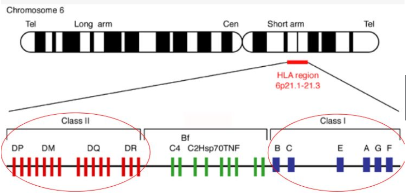

neoantigen：
癌细胞在发生发展过程中，会产生很多基因突变，部分基因突变也会产生正常组织、正常细胞所没有的蛋白质，这些蛋白质，很有可能也会激活免疫系统，并引来免疫系统对癌细胞的攻击。这些能激活免疫系统（能被免疫细胞所识别）的、由癌细胞基因突变所产生的异常蛋白质（异常抗原），就是Neoantigen（目前中文学术界暂时翻译为：肿瘤新生抗原）。
2015年12月，同一研究团队在《science》上发表重磅文章，他们利用类似的方式，检测了10个消化道肿瘤患者的组织，发现其中9个病友，都能找到1-3个以上的、能被自身免疫系统识别的基因突变导致的异常蛋白质。该研究团队甚至在一个肠癌的患者体内，发现著名的KRAS突变也可以成为为neoantigen（KRAS突变是史上最恶性、最难对付的致癌突变）。因此，学术界估计，绝大多数病友的肿瘤，应该都能找到或多或少的neoantigen。一般而言，患者肿瘤组织中基因突变的总数越多（也就是TMB越高），那么他所携带的neoantigen也越多。
Loquai教授和Özlem türeci教授，利用neoantigen所对应的RNA做疫苗，一共治疗了13例病人。在接种了疫苗后，所有患者体内都产生了针对neoantigen的免疫反应。8位局部晚期接受了手术治疗的病友，其无复发生存时间明显延长，疫苗的注射相当于大幅度推迟乃至预防了肿瘤的复发；另外5位患者为晚期恶性黑色素瘤患者，其中的2位在单独接受疫苗注射后，出现了肿瘤明显缩小，达到了客观有效；另外一位病友接受了疫苗联合PD-1抗体治疗，肿瘤完全缓解。
同一天，哈佛大学的Catherine J. Wu教授带领的团队，利用neoantigen所对应的抗原肽做疫苗，也成功报道了治疗恶性黑色素瘤的案例。他们入组了20位局部晚期或者晚期的恶性黑色素瘤患者，在这20位患者中一共找到了97个neoantigen，制备成了个性化肿瘤疫苗，应用给相对应的患者。最后一共有6名患者，最终真正接受了治疗（其他病友拒绝冒险或者由更常规的治疗还可以试一试，没有同意参与这个全新的治疗试验组），4名患者在接受疫苗注射25个月后未出现复发；另外2名出现复发的病友，随后接受了PD-1抗体治疗，均实现了肿瘤完全缓解，并且在他们的身体里检测到了针对neoantigen的特异性免疫细胞。以下是其中2例患者在治疗前后的CT片子：在先后接受neoantigen疫苗和PD-1抗体之后，这两例患者肺部及皮下软组织中的转移灶，均达到了完全缓解，癌细胞不见踪迹。
免疫组学数据库：http://www.imgt.org/
HLA-分型：


从示意图可以看出，一个HLA Allel 可以分成四个字段，在加上最后的修饰后缀，共5个字段；在定义HLA 分型结果的分辨率时，会根据分型结果的最大位数来判断：如果只给出了字段一，即血清学分类的信息，代表是2位的分型结果；
如果最多给出了字段二，即对应的蛋白信息，代表是4位的分型结果；
如果最多给出了字段三，即CDS区信息，代表是8位的分型结果；
如果分型结果给出了最后的后缀，代表是9位的分型结果。
HLA-A、B、DR血清学分型与基因分型的比较研究：
目的：比较研究HLA-Ⅰ、Ⅱ血清学分型与基因分型结果,分析HLA-A、B、DR血清学分型误定规律,提高移植配型的准确性。
方法：应用聚合酶链反应-序列特异性引物(PCR-SSP)技术,对240名骨髓资料库中已用血清学分型的自愿者进行HLA-A、B、DR基因分型,并对血清学分型与基因分型结果进行低分辨水平的比较研究。
结果：HLA-A特异性血清学分型错误率在纯合子与杂合子中分别占30.65%与11.52%,总错误率14.35%;
HLA-B特异性血清学分型错误率在纯合子与杂合子中分别占42.22%与16.15%,总错误率18.85%;
HLA-DR特异性血清学分型错误率在纯合子与杂合子中分别占37.50%与14.58%,总错误率18.63%。
HLA-A特异性血清学分型假阴性16.55%,假阳性1.44%,错误指认特异性7.42%,HLA-B分别为20.32%,1.84%和13.56%,HLA-DR分别为13.33%,2.21%和10.05%。结论HLA-A、B、DR纯合子血清学分型错误率明显高于对应的杂合子分型,HLA-B,DR特异性血清学分型错误率显著高于HLA-A特异性。
结论：HLA-A 分型结果最优。
Neoantigen的识别三大步骤：
1）Somatic mutation的识别；
2）HLA分型; HLA I类分子能结合的氨基酸残基数相对固定，一般为9肽。
3）Neoantigen与MHC-1亲和力预测。预测算法分类如下：
3.1 基于pMHC分子的3D结构（结构信息不足，预测可信度低）基于序列信息：
基于序列信息：
3.2 Position-specific scoring matrices
机器学习主导的非线性算法
3.3 Allele-specific mathods (NetMHC) （ 神经网络算法，netMHCpan略好，因为有大量数据训练）
3.4 Pan-specific mathods (NetMHCpan) （无足够数据训练是略好，非人物种略好）

实践学习：
1）call 变异用 vep软件进行突变注释。
2）突变覆盖深度矫正。
2.1 gatk LeftAlignAndTrimVariants 变异过滤。
gatk LeftAlignAndTrimVariants --reference hs37d5.fa --variant depo.vcf --output depo.left.vcf --max-indel-length 1000
2.2 bamReadCount 统计变异位点各个碱基深度。
2.3 矫正vcf中每个变异的深度信息。
3）
新抗原分析流程: